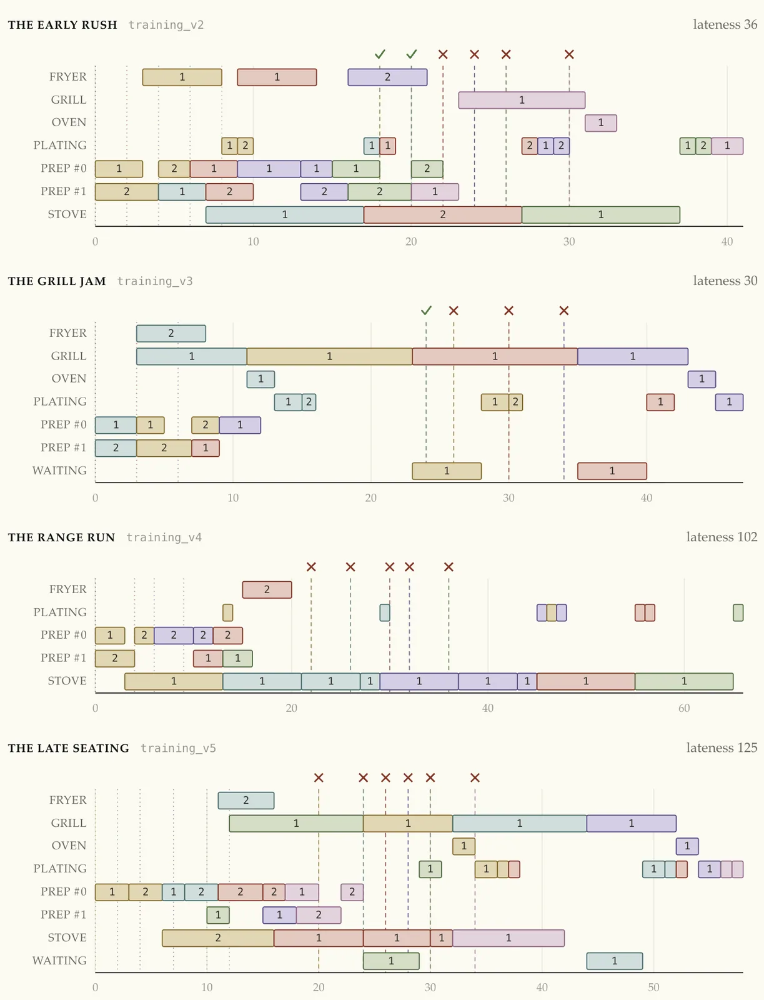

A kitchen scheduling problem — and why getting it right is hard.
One grill. One stove. A full room.
Which order do you cook next?
Every plate at Le Petit Renard is cooked to order. Get the sequence right and the night flows; get it wrong and the plates run late. We need to discover a simple groundrule that lets everyone in the kitchen make the best possible call on what to cook next.
Our goal is simple: a single groundrule so that every table is served on time — and all together, so no one sits watching a friend eat while their own plate is still in the kitchen.
The fewer minutes anyone's left waiting, the better the night — technically speaking, we want to reduce the latency to, ideally, zero.
Get the order of cooking wrong and it shows — here are four nights a careless groundrule mis-scheduled, plates stacking up behind the busiest station and landing minutes late.

We don't touch the kitchen, the recipes, or the concept — Le Petit Renard stays exactly what it is. The only lever is sequence: the order we cook things in. This is the line we have to work with —
each is one cook or pan working at once — the fewer, the tighter
One simple groundrule, found by search rather than written by hand. Our approach lays out how.